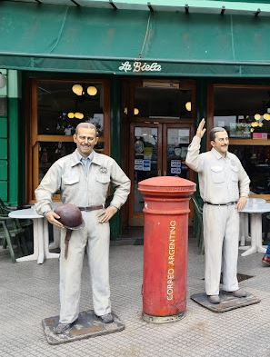
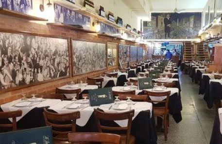

Es una pizzería tradicional con una pizza maravillosa, Nada
elegante, es un lugar fantástico, Tanto la pizza a la piedra
como la fugazzeta son muy recomendables
Cafe Tortoni
Av. de Mayo 825, C1084 CABA
El Café Tortoni, ubicado en el 825 de la Avenida de Mayo, es un
establecimiento comercial histórico de la Ciudad de Buenos
Aires, Argentina.

La Biela
Av. Pres. Manuel Quintana 596, C1129 CABA
Restaurante histórico luminoso especializado en platos
principales clásicos argentinos, ensaladas y sándwiches

Los Inmortales
Av. Corrientes 1369, C1043 CABA
Los Inmortales: Clásica pizzería del centro porteño. Lugar con
muchísima historia, por la cantidad de personajes de la cultura
nacional que han pasado por allí.